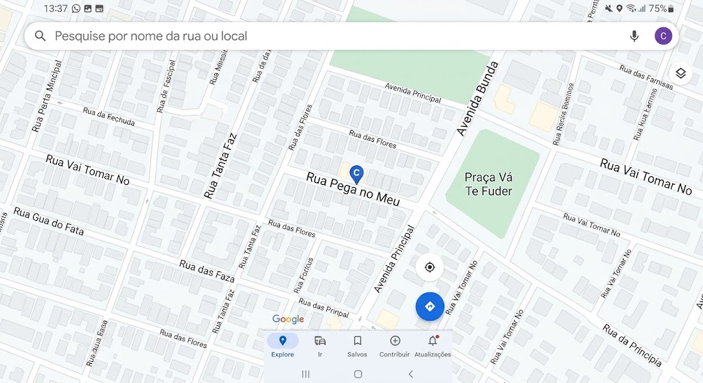

O Mentalista (The Mentalist) é uma série policial que acompanha Patrick Jane (Simon Baker), um homem com incríveis habilidades de observação, dedução e leitura comportamental. Após fingir ser um vidente na TV e provocar o trágico assassinato de sua esposa e filha pelo serial killer Red John, Patrick abandona o charlatanismo e passa a colaborar como consultor do Departamento de Investigação da Califórnia (CBI). Trabalhando ao lado da agente Teresa Lisbon e sua equipe, ele utiliza truques mentais, hipnose e inteligência afiada para desvendar assassinatos complexos, enquanto persegue incansavelmente sua busca pessoal por vingança contra Red John. A série combina mistério, momentos de humor irônico e uma envolvente jornada de redenção ao longo de suas 7 temporadas.

Endereço: 1500 11th Street
Cidade: Sacramento, Califórnia (CA)
CEP: 95814 - Estados Unidos
Atendimento: Segunda a Sexta, das 08h às 18h
Contato: consultoria@cbi.ca.gov